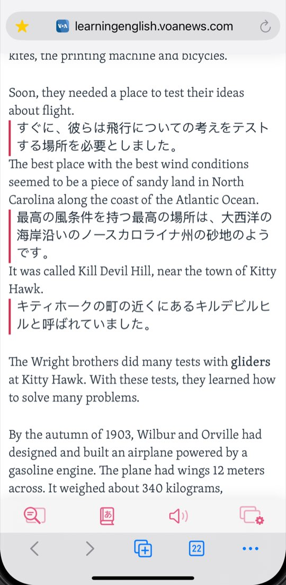
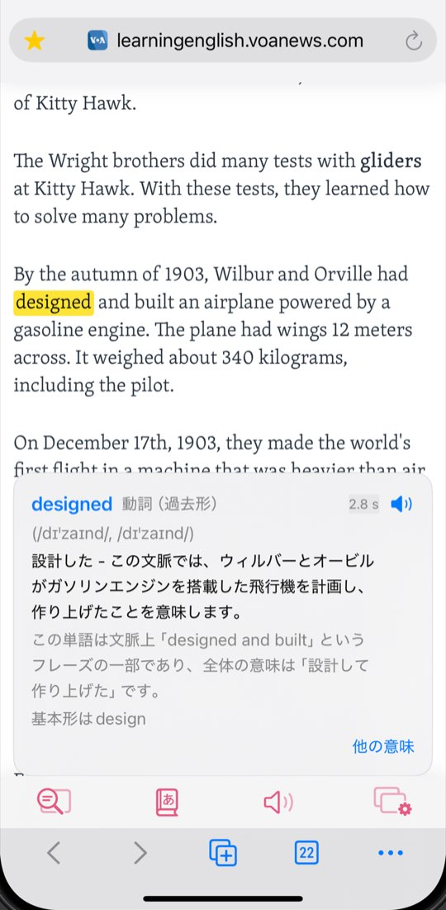
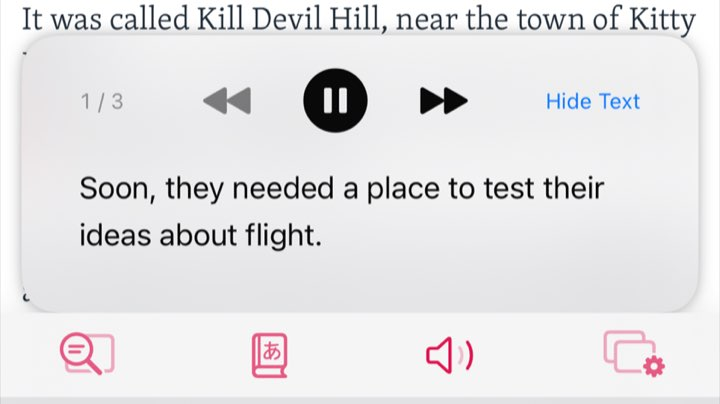
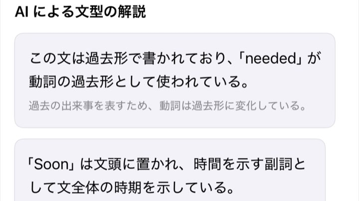
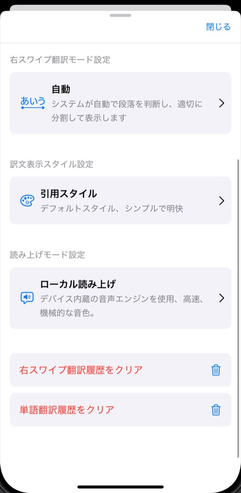
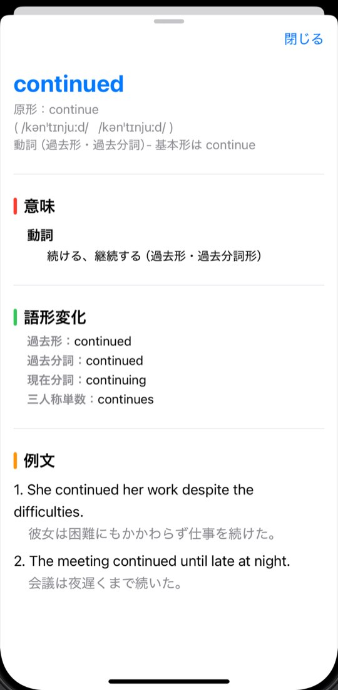

Just finished my first 10K run. Slow, but I didn’t stop once.
初めての10キロラン、完走しました。遅かったけど、一度も止まりませんでした。
WordByWord・外国語学習者のためのWeb対訳リーダー
WordByWordは、外国語を学びながらWebを読む人のためのiPhone・iPadアプリです。
無料ダウンロード・iPhone／iPad
Saturday Mornings at the Neighborhood Library
Our neighborhood library opens early on Saturdays. People arrive with coffee and end up reading until noon.
近所の図書館は、土曜日は朝早くから開いています。みんなコーヒーを手にやって来て、気づけばお昼まで読みふけっています。
アプリ内ブラウザで段落を右にスワイプすると、訳文が原文のすぐ下に挿入されます。単語をダブルタップすると、その文での意味をAIが説明します。
無料（1日の利用上限あり）・Plusは月額サブスクリプション・iOS 18以降。AppleシリコンのMacとVision Proでも動作
外国語を学びながらWebを読む人のために作りました。ほとんどのことは、この2つの操作で済みます。文をもっと詳しく知りたいときのための機能もそろっています。
01 右スワイプ翻訳
アプリ内ブラウザでページを開き（URLを入力しても、検索してもOK）、段落を右にスワイプ。訳文がその下に挿入されるので、画面を切り替えずに原文と見比べながら読めます。

02 ダブルタップ辞書
WordByWordは単語を説明する前に文全体を読み、まず熟語やフレーズかどうかを確かめます。辞書の訳語を並べるのではなく、その文での意味がわかります。
注 中国語・日本語・韓国語の原文では使えません。

Just finished my first 10K run. Slow, but I didn’t stop once.
初めての10キロラン、完走しました。遅かったけど、一度も止まりませんでした。
X（旧Twitter）
WordByWordのアプリ内ブラウザでx.comにログインし、ポストを右にスワイプすると、その下に訳文が入ります。外国語で発信しているアカウントを追うときに便利です。
英語ページ 英語のみ
英語の文を右スワイプで翻訳したあと、「チャンク抽出」はひとまとまりで働くフレーズに下線を引き、「Action Flow」は文の中心となる動作とそれにつながる動作を示します。自動・手動・オフを選べます。

読み上げ
単語も文も読み上げられます。「AI読み上げ」はクラウドの自然な音声。「ローカル読み上げ」はiOS内蔵の音声ですばやく再生でき、速度の調整や、ダウンロード済みのプレミアム・拡張音声も使えます。

文の構造
スワイプ翻訳の履歴から文を開き、「AI による文型の解説を取得」をタップ。文を要素に分け、それぞれがどうつながっているかを説明します。
クラウド（Azure・Google）かiOS内蔵の翻訳を選択。回数切れならローカルで再試行
「自動」「段落」「文ごと」、すぐ表示かタップで表示か、スタイルも選べます
スワイプ翻訳と調べた単語を元の文ごと保存。見返すことも消去もできます
iPhone・iPad（iOS 18以降）。AppleシリコンのMacとVision Proでも動作します


訳文の言語を選ぶだけ。原文の言語は最初は英語で、読んでいるページの言語を検出して切り替わります。自分で設定することもできます。
WordByWordは無料でダウンロードでき、ほとんどの機能に毎日リセットされる無料枠があります。WordByWord Plusにすると上限が上がります。
| 機能 | 無料 | Plus月額$3.99（米国の価格） |
|---|---|---|
| 翻訳 | ||
| 右スワイプ翻訳（クラウド） | 1日50回 | 1日500回 |
| 右スワイプ翻訳（ローカル） | 1日100回 | 上限なし |
| 辞書 | ||
| ダブルタップ辞書（AI解釈） | 1日20回 | 1日500回 |
| 他の意味 | 1日10回 | 1日500回 |
| 読み上げ | ||
| AI発音（単語） | 1日10回 | 1日200回 |
| AI発音（文） | 1日10回 | 1日100回 |
| iOSの音声（ローカル読み上げ） | 上限なし | 上限なし |
| 文の理解 | ||
| チャンク抽出 英語のみ | 1日30回 | 1日500回 |
| Action Flow 英語のみ | 1日20回 | 1日500回 |
| AI文型解説 | 1日5回 | 1日500回 |
上限内なら、すべての機能を無料で使えます。Plusは米国で月額$3.99、上限が上がります。
価格は国・地域によって異なり、App Storeに表示されます。サブスクリプションはAppleアカウントの設定からいつでも解約できます。
WordByWordは、外国語を学びながらWebを読む人のためのiPhone・iPadアプリです。アプリ内ブラウザでページを開き、段落を右にスワイプすると原文の下に訳文が入り、単語をダブルタップするとその文での意味がわかります。個人開発者のJinlongが開発しています。WordByWordについて詳しく
いいえ。WordByWordが翻訳するのはスワイプした段落で、訳文はそのすぐ下に入ります。ページのほかの部分は原文のままです。訳文は段落ごと・文ごと（または自動）で表示でき、すぐ表示するかタップで表示するかも選べます。
いいえ。WordByWordはSafari拡張機能ではなく、ほかのアプリに翻訳ボタンを追加することもありません。タブとブックマークを備えた専用ブラウザがあり、URLを入力するか検索してページを開き、そこでスワイプして翻訳します。
直訳という意味ではありません。単語を1つずつ訳すと意味を取り違えやすいため、WordByWordは文や段落の単位で翻訳し、単語はダブルタップしたときに、その文の文脈で説明します。
はい。アプリ内ブラウザでx.comを開いてログインし、ポストを右にスワイプすると下に訳文が出ます。単語のダブルタップ辞書も使えます（中国語・日本語・韓国語のポストを除く）。Xアプリではなく、WordByWordの中で開いたXのWeb版で使う機能です。
アプリの表示は20言語、翻訳先は21言語（中国語の簡体字・繁体字、米国英語・英国英語を含む）です。原文の言語は最初は英語で、読んでいるページの言語を検出して切り替わり、手動でも変更できます。原文の言語によって使えない機能があります。中国語・日本語・韓国語の原文ではダブルタップ辞書が使えず、チャンク抽出とAction Flowは英語の原文のみ対応です。
はい、無料でダウンロードして使えます。無料版の1日の上限は、クラウドでの右スワイプ翻訳50回、ローカルエンジンでの翻訳100回、ダブルタップ辞書20回、チャンク抽出30回、Action Flow 20回、AI文型解説5回などで、iOSの音声に上限はありません。WordByWord Plus（月額サブスクリプション。米国では$3.99、各国の価格はApp Storeに表示）にすると上限が上がります。
選べます。クラウド翻訳エンジンは現在、AzureとGoogleの翻訳サービスを使っています。ローカルエンジンはiOS内蔵の翻訳機能で、初回は言語データのダウンロードが必要な場合があります。その日のクラウド翻訳の回数を使い切ったら、ローカルエンジンに切り替えて再試行できます。単語の解説、文型解説、AI読み上げはクラウドのAIサービスを使います。
いいえ。WordByWordはアカウント登録なしで使えます。ログインが必要なのは、アプリ内ブラウザでx.comなどのサイトを使うときだけで、ふつうのブラウザと同じです。WordByWord Plusのサブスクリプションは、WordByWordのアカウントではなくAppleアカウントにひも付いています。
新しい端末でも同じAppleアカウントを使い、WordByWordの設定で「今すぐアップグレード」をタップしてから「購入を復元」を選びます。サブスクリプションの変更や解約は、Appleアカウントのサブスクリプション設定から行えます。
ありません。WordByWordはApp Storeでのみ提供しており、iPhone・iPad、AppleシリコンのMac、Apple Vision Proで使えます。
自分で選んだWebページやXのポストは、英語でもほかの言語でも、これまでどおりWordByWordで読めます。そのうえで、レベル別（A1–C1）の英語ニュースを毎日読みたい、保存した文や単語をゲームで復習したいなら、同じ開発者のSurfEnglishも試してみてください。右スワイプとダブルタップはそのまま使えます。2つのアプリは併用できます。SurfEnglish公式サイト
WordByWordはiPhoneとiPad（iOS 18以降）で使え、App StoreからAppleシリコンのMac（macOS 15以降）やApple Vision Proにも入れられます。パソコンのブラウザで使える版はまだありません。同じ開発者によるChrome拡張機能を準備中です。詳しくはChrome拡張機能のページをご覧ください。